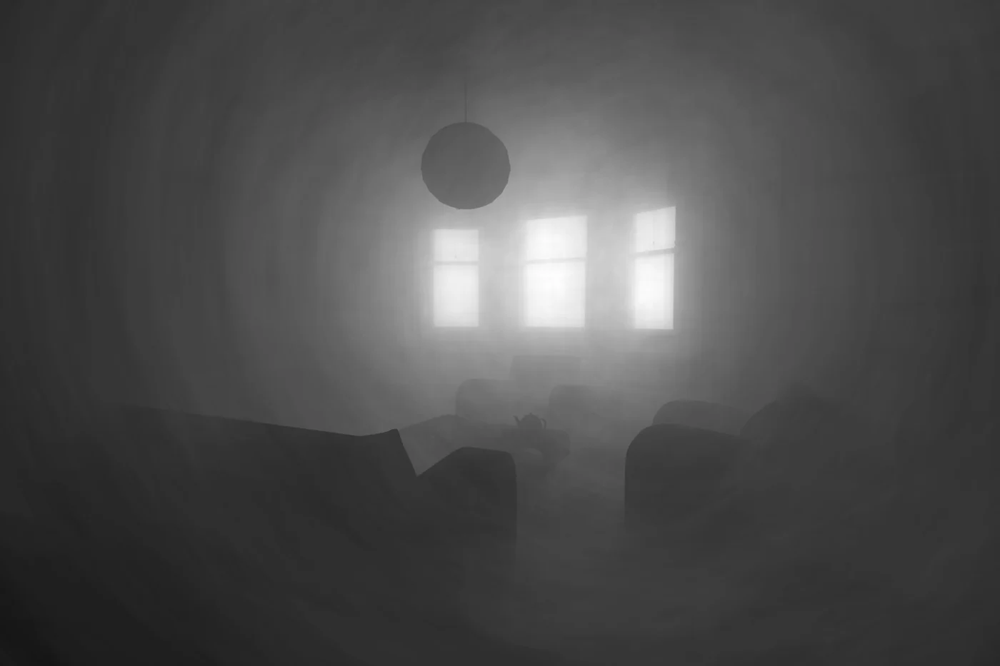
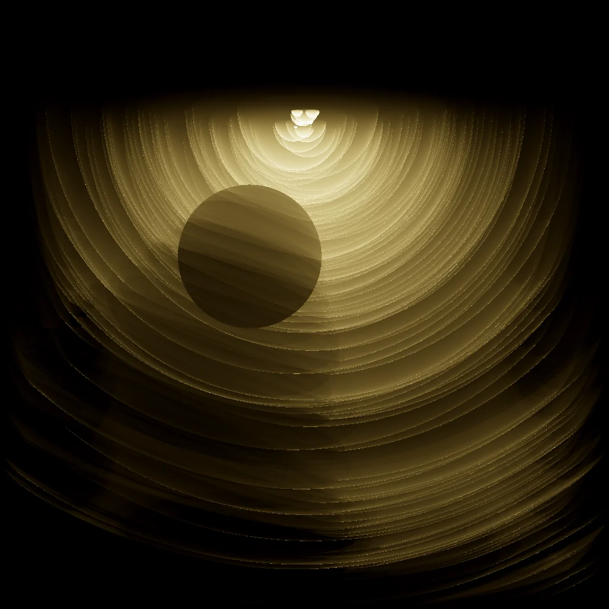
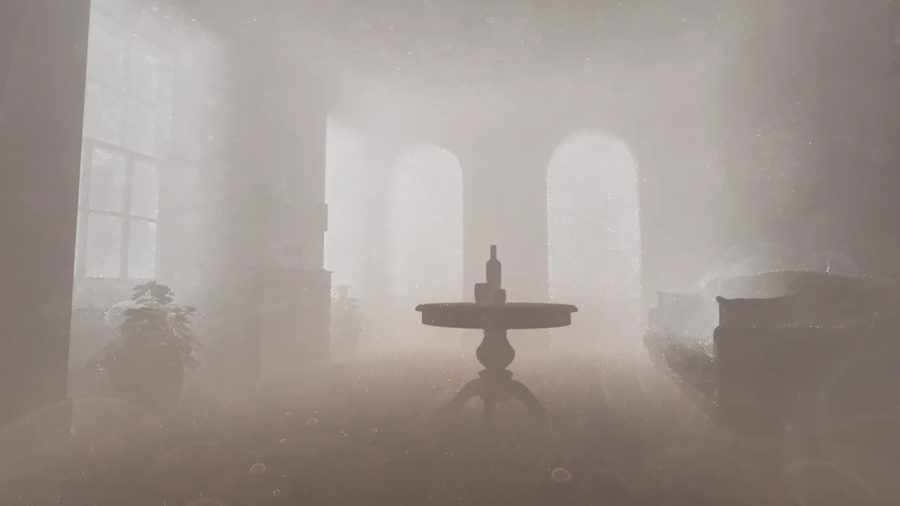

Photon Primitives
A framework that turns sampled path coordinates into curves, sheets and volumes for light transport. Jacobians connect their geometry to estimator weights; complementary supports and MIS improve coverage. The same structures also create NPR imagery and motivate unpublished surface, derivative and hourglass follow-ups.
- ξ
Hold a path seed
Keep sampled coordinates fixed while choosing others to release.
- ∿
Sweep a support
Those released coordinates trace a curve, sheet or volume.
- J
Account for geometry
Convert the sampling measure using the appropriate Jacobian.
- Σ
Combine strategies
Use complementary densities and MIS; inspect performance in RadianceLab.
Unbiased path connection depends on the full measure and support; finite-radius variants retain kernel bias.



Move the ray and inspect the projected Jacobian
Move the ray and inspect the projected Jacobian
Draws with
Artifact
Export
Purpose
Made with
Demonstrates
Wheel over the scene may zoom; move outside it to scroll the page.

Suspended · activate to run; playback pauses after the full panel leaves the vertical viewport.